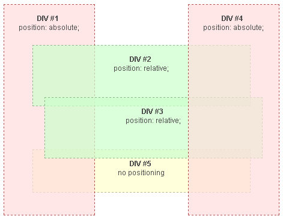
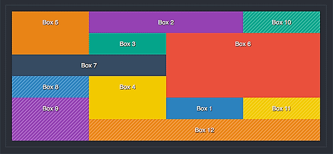

CSS
Cascading Style Sheets (CSS) er et sprog oprindeligt skabt af den norske web pioner Håkon Wium Lie og blev først frigivet i 1996. Internet Explorer var den første browser til at understøtte det. Siden overtog W3S standardiseringen af sproget.
CSS Syntax

Selectors
En selector er det element i HTML-filen der skal styles. De tre primære selectors:
- Element selectors: bruges når et tag som f.eks. body skal styles
- Id selectors: bruges når et tag i HTML-filen har fået en id attribute
- Class selector: bruges når et tag i HTML-filen har fået en class attribute
Pseudo-class selectors
Selector’en kan også indeholde en pseudo-class og denne bruges hvis et elements forskellige stadier skal defineres og styles. Den mest brugte pseudo-class er hover: hover viser sig ved, at man holder musen over et element og dette så responderer ved et skift i stylingen. Eksempelvis ændring af farve eller størrelse. Pseudo-class’en skrives selector:hover
Descendant selectors
Dette er en strukturel selector og gør det muligt at få fat i et specifikt element, som ligger inde i et eller flere elementer og som ikke har en class eller et id i HTML-filen. Det er tilladt at springe et niveau over.
Bruges der en child selector, skal alle niveauer defineres.
Det er som regel nemmest at strukturere sin HTML-kode med classes og id’er. Descendant selectors bruges mest hvis man står i en situation hvor der ikke er mulighed for at rette i HTML-filen.
Declarations
Indholdet mellem to curly brackets kaldes samlet for en declaration. Declaration består af to dele:
- Property: definerer hvilket aspekt af selector’en der skal styles. Eksempelvis background-color eller font-size
- Value: fortæller hvordan property’en skal style den specifikke selector
Kaskaderegler
Kaskadereglerne beskriver hvordan modstridende declarations løses. Hvilken declaration der er gældende, kommer an på tre ting:
- Vigtighed: skrives der !important efter en declaration trumfer specificering og rækkefølge, og denne declaration vil altid være gældende. Bør undgås da det ødelægger idéen med kaskaderegler
- Specificering: den mest specifikke selector, som er id, er gældende. Den eneste måde at over skrive den på er ved at benytte !important. Er der to declarations, hvor den ene er en child selector, vil denne vinde da det er den mest specifikke
- Rækkefølge: hvis declarations har den samme specificering, vil det være rækkefølgen der bestemmer hvilken declaration der er gældende. Den sidst definerede, den nederste i dokumentet eller HTML-filen, er altid den gældende.
Kilde
Box model

Denne model beskriver hvordan følgende properties placerer sig omkring HTML-elementet:
- Content: selve elementet. Eksempelvis et billede eller tekst
- Padding: afstanden mellem elementen og rammen der omslutter det
- Border: selve rammen. Denne kan være både synlig og usynlig
- Margin: afstanden mellem rammen og de omkringliggende elementer
Positioning

Positioning fungerer således:
- Static: i det nederste ”lag” af HTML-siden er elementer med position static. Elementerne positioneres i forhold til hinanden
- Relative: i det samme lag som static findes de elementer der har position relative; disse er en del af sidens flow og positioneres i forhold til hinanden. De kan dog forskydes fra de øvrige elementer ved brug af position left, right, top eller bottom
- Absolute: de elementer der får position absolute er ikke en del af sidens flow og bliver placeret uafhængig af de andre elementer. Eftersom absolute ligger i laget over static og relative, har absolute ingen effekt på de andre elementer
- FIxed: i det øverste lag finder man de elementer der har postion fixed; disse elementer er låst fast i deres placering og vil derfor ikke følge med sidens flow når der scrolles
CSS Grids

CSS Grids bruges til opsætning af layout på et website; det gør det lettere at bestemme elementernes størrelse og placering i forhold til hinanden. Det fungerer således: der oprettes kolonner og rækker som tilsammen danner et gitter eller grid. Dette gitter kan inddeles i et antal felter, hvor man selv bestemmer størrelsen på hver især. Sitets indhold placeres i de forskellige kolonner/rækker/felter. Grids er en simplificeret måde at gøre sitet responsivt på, eftersom felterne eksempelvis kan placeres under hinanden, fremfor ved siden af hinanden.